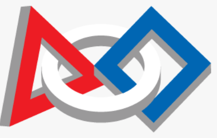
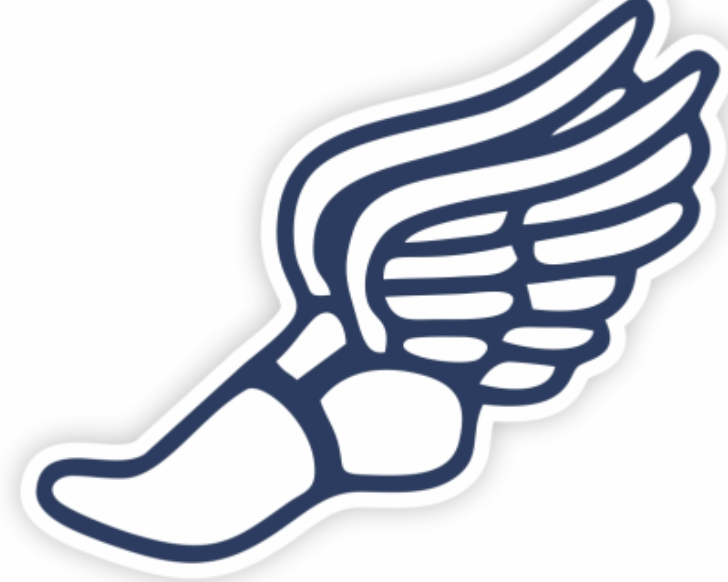

2
Sid Shah

Introduction
Hello! My name is Siddharth (Sid) Shah, I am a 14 years old.
I am currently a freshmen a Winston Churchill high school located in Potomac, Maryland.
I have a strong passion for robotics and programming. I also enjoy running track as my sport,
as well as play basketball and football with my friends
FIRST Tech Challenge

FIRST is a robotics-based organization with a
goal to spread STEM across the world. I joined the first program in 5rd grade in FIRST Lego League, as a programmer
on team 39708 STARS participating in the Replay and Cargo Connect season, and later trasitioned to 55989 LEDS as the captain
for the duration of the Superpowered season. My passion continued onto FIRST Tech Challenge which I participate on currently as programmer
originally as the captian of 24163 Illuminate for Centerstage and Into The Deep. Now I am a programmer on 13100 47 Beavers for the Decode season.
I hope to continue FTC as it has been engraved in my life for well...almost 6 years.
Track & Field

Starting in 7th grade I wanted to join a sport that served as a stable
exercise and was stable. I had quit basketball earlier in the year as it was not for me and took too much time out of my
life that I could have spent on something useful. I practiced nearly everyday for the next 2 years running as a distance runner
on Bethesda Track throughout the rest of middle school, getting decent times at track meets. Later in highschool I join the
Varsity track and field team which I am currently running for with extraneous practices everday